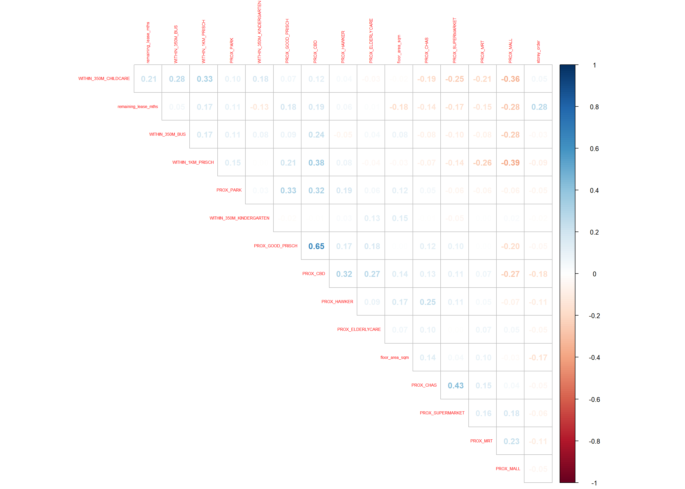
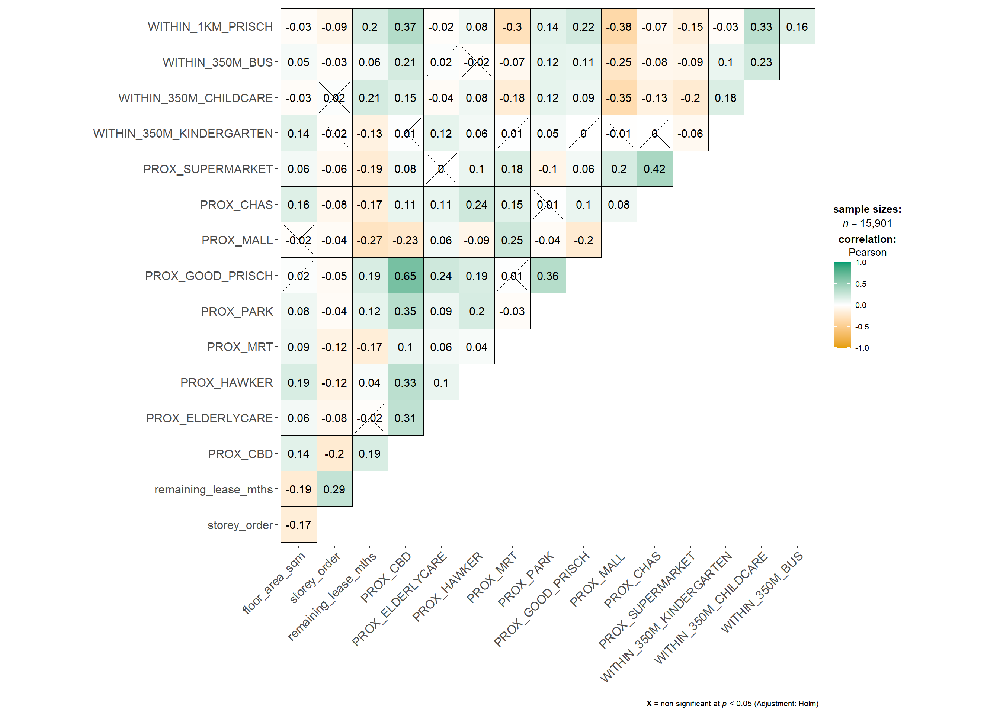
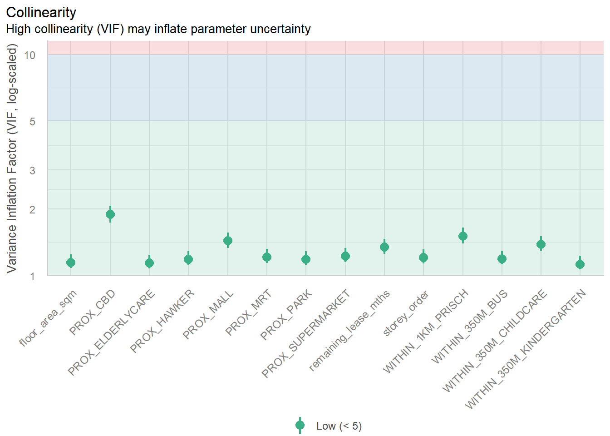
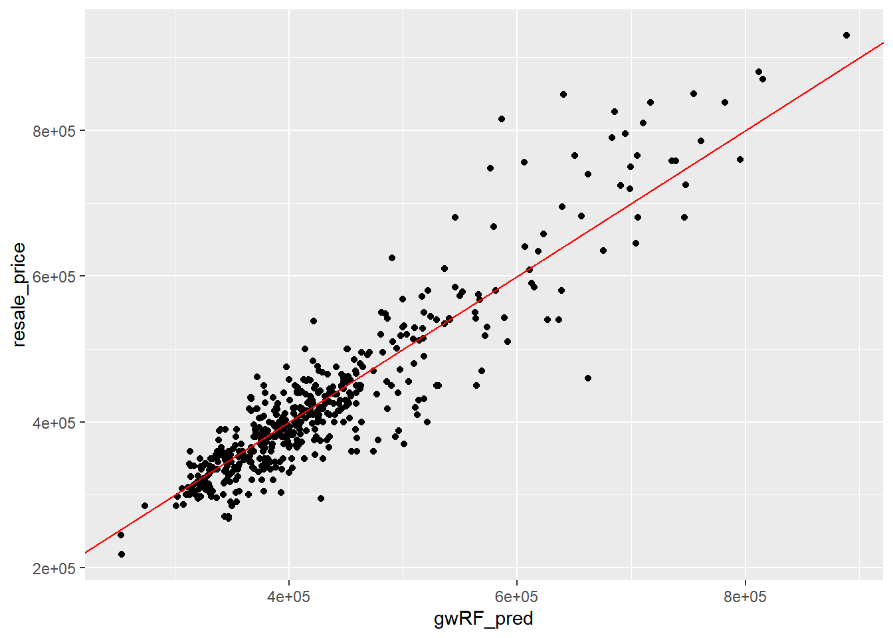

pacman::p_load(sf, spdep, GWmodel, SpatialML,
tmap, rsample, Metrics, tidyverse, knitr, kableExtra, spatialRF,randomForestExplainer)In-class Exercise 8: Supplement to Hands-on Exercise 8
1 The Data
The study integrates both aspatial and geospatial datasets to model HDB resale prices in Singapore.
| Dataset | Description | Format |
|---|---|---|
| Aspatial dataset | HDB Resale data: a list of HDB resale transacted prices in Singapore from Jan 2017 onwards, downloaded from Data.gov.sg. | CSV |
| Geospatial dataset | P14_SUBZONE_WEB_PL: a polygon feature data providing information of URA 2014 Master Plan Planning Subzone boundary data, also downloaded from Data.gov.sg. | ESRI shapefile |
| Locational factors with geographic coordinates | Eldercare centres, Hawker centres ,Parks ,Supermarkets ,CHAS clinics ,Childcare services ,Kindergartens downloaded from Data.gov.sg MRT/LRT stations ,Bus stops downloaded from Datamall.lta.gov.sg, | GeoJSON or Shapefile |
| Locational factors without geographic coordinates | Primary schools, extracted from Data.gov.sg’s school information dataset. CBD coordinates, retrieved from Google. Shopping malls , scraped from Wikipedia. Good primary schools , ranked list of popular schools fromLocal Salary Forum. | CSV |
{tbl-colwidths=“[30,60,10]”}
2 Installing and Loading R packages
There are 8 packages used in this exercise.
| Description | |
|---|---|
| GWmodel | Calibrates geographical weighted family of models |
| rsample | Provides functions to create different types of resamples and corresponding classes for their analysis. |
| sf | Handles importing, managing, and processing vector-based geospatial data |
| tidyverse | A collection of R packages for data wrangling and visualisation, including readr, dplyr, and ggplot2. |
| tmap | Creates cartographic quality static and interactive thematic (choropleth) maps. |
| SpatialML | Allows for a geographically weighted random forest regression including a function to find the optical bandwidth. |
| Metrics | Implements metrics for regression, time series, binary classification, classification, and information retrieval problems. |
| spdep | Provides tools for spatial dependence: building neighbour lists, spatial weights, and spatial autocorrelation analysis. |
{tbl-colwidths=“[15,85]”}
We load the following packages into R environment.
3 Preparing Data
3.1 Reading data file to rds
We first read the input data sets that is saved in simple feature data frame.
mdata <- read_rds("data/rawdata/mdata.rds")3.2 Data Sampling
Calibrating predictive models are computaional intensive, especailly random forest method is used. FOr quick prototyping, 1 10% sample will be selected at random from the data. The code chunk below samples 1500 observations.
set.seed(1234)
HDB_sample <-mdata %>%
sample_n(1500)3.3 Checking of overlapping points
When using GWR model to build explanatory or predictive models, we should first check if there are overlapping points in the HDB locations. In this exercise, we only check the overlapping on the sample data.
overlapping_points <- HDB_sample %>%
mutate(overlap = lengths(st_equals(., .)) >1)3.4 Spatial Jitter
st_jitter() of sf package is used to move the overlapped point features away from each other.
HDB_sample <- HDB_sample %>%
st_jitter(amount = 1)Then we could run the overlapping check again to make sure there are no overlapping points in the data set.
overlapping_points <- HDB_sample %>%
mutate(overlap = lengths(st_equals(., .)) >1)3.5 Data Sampling
We split the entire data into 65% training and 35% test by using initial_split() of rsample package, which belongs to tigymodels ecosystem. Then we extract the training set and test set from a data split object created by functions initial_split().
set.seed(1234)
resale_split <- initial_split(HDB_sample, prop = 6.67/10,) #1000 & 500
train_data <- training(resale_split)
test_data <- testing(resale_split)We save both files on the disk.
write_rds(train_data, "data/model/train_data.rds")
write_rds(test_data, "data/model/test_data.rds")3.6 Computing Correlation Matrix
Before loading predictor into a predictive model, let’s plot the correlation matrix to check if there is any sign of multicolinearity.
HDB_sample_nogeo <- st_drop_geometry(HDB_sample)
corrplot::corrplot(cor(HDB_sample_nogeo[, 2:17]),
diag = FALSE, # hide diagonal or TRUE
order = "AOE",# angular order of the eigenvectors" /original/AOE/FPC/hclust/alphabet
tl.pos = "td", # text label position: top and diagonal/lt/n null
tl.cex = 0.5, # text label size: shrinks 50%
method = "number", # display number/circle/color/shade/pie
type = "upper") #show only the upper triangle/full/lower
There is no sign of multicolinearity since all correlation values are below 0.8.
In order to avoid multicollineariy, we use ggcorrmat() of ggstatsplot is to plot a correlation matrix to check if there are pairs of highly correlated independent variables.
mdata_nogeo <- mdata %>%
st_drop_geometry()
ggstatsplot::ggcorrmat(mdata_nogeo[, 2:17])
4 Retriving the Stored Data
We load the saved data into R.
train_data <- read_rds("data/model/train_data.rds")
test_data <- read_rds("data/model/test_data.rds")5 Building a Non-spatial Multiple Linear Regression
A multiple regression model is built as a base line model.
price_mlr <- lm(resale_price ~ floor_area_sqm + # target ~ independent variables
storey_order + remaining_lease_mths +
PROX_CBD + PROX_ELDERLYCARE + PROX_HAWKER +
PROX_MRT + PROX_PARK + PROX_MALL +
PROX_SUPERMARKET + WITHIN_350M_KINDERGARTEN +
WITHIN_350M_CHILDCARE + WITHIN_350M_BUS +
WITHIN_1KM_PRISCH,
data=train_data)
summary(price_mlr)
Call:
lm(formula = resale_price ~ floor_area_sqm + storey_order + remaining_lease_mths +
PROX_CBD + PROX_ELDERLYCARE + PROX_HAWKER + PROX_MRT + PROX_PARK +
PROX_MALL + PROX_SUPERMARKET + WITHIN_350M_KINDERGARTEN +
WITHIN_350M_CHILDCARE + WITHIN_350M_BUS + WITHIN_1KM_PRISCH,
data = train_data)
Residuals:
Min 1Q Median 3Q Max
-167624 -37265 -415 34811 224601
Coefficients:
Estimate Std. Error t value Pr(>|t|)
(Intercept) 115703.7 34303.4 3.373 0.000773 ***
floor_area_sqm 2778.6 292.3 9.507 < 2e-16 ***
storey_order 12698.2 1071.0 11.857 < 2e-16 ***
remaining_lease_mths 350.2 14.6 23.997 < 2e-16 ***
PROX_CBD -16225.6 630.1 -25.751 < 2e-16 ***
PROX_ELDERLYCARE -11330.9 3220.8 -3.518 0.000455 ***
PROX_HAWKER -19964.1 4021.1 -4.965 8.10e-07 ***
PROX_MRT -39652.5 5412.3 -7.326 4.92e-13 ***
PROX_PARK -15878.3 4609.2 -3.445 0.000595 ***
PROX_MALL -15910.9 6438.1 -2.471 0.013628 *
PROX_SUPERMARKET -18928.5 13305.0 -1.423 0.155150
WITHIN_350M_KINDERGARTEN 9309.7 2024.3 4.599 4.80e-06 ***
WITHIN_350M_CHILDCARE -1619.5 1181.0 -1.371 0.170572
WITHIN_350M_BUS -447.7 738.7 -0.606 0.544624
WITHIN_1KM_PRISCH -10698.0 1543.5 -6.931 7.55e-12 ***
---
Signif. codes: 0 '***' 0.001 '**' 0.01 '*' 0.05 '.' 0.1 ' ' 1
Residual standard error: 61270 on 985 degrees of freedom
Multiple R-squared: 0.7424, Adjusted R-squared: 0.7387
F-statistic: 202.7 on 14 and 985 DF, p-value: < 2.2e-16The regression summary report indicates that the model slightly underestimates HDB resale prices, as shown by the residual median of –1,930. However, the R2 value of 0.7373 suggests that the model explains approximately 74% of the variation in HDB resale prices since 2017, which exhibits good predictive performance overall.
5.1 Multicolinearity Check
vif <- performance::check_collinearity(price_mlr)
kable(vif,
caption = "Variance Inflation Factor (VIF) Results") %>%
kable_styling(font_size = 18) | Term | VIF | VIF_CI_low | VIF_CI_high | SE_factor | Tolerance | Tolerance_CI_low | Tolerance_CI_high |
|---|---|---|---|---|---|---|---|
| floor_area_sqm | 1.146686 | 1.085743 | 1.250945 | 1.070834 | 0.8720785 | 0.7993954 | 0.9210287 |
| storey_order | 1.206020 | 1.135720 | 1.312734 | 1.098189 | 0.8291736 | 0.7617690 | 0.8804986 |
| remaining_lease_mths | 1.343645 | 1.254833 | 1.463410 | 1.159157 | 0.7442440 | 0.6833358 | 0.7969186 |
| PROX_CBD | 1.887898 | 1.733977 | 2.074096 | 1.374008 | 0.5296898 | 0.4821378 | 0.5767088 |
| PROX_ELDERLYCARE | 1.140418 | 1.080572 | 1.244716 | 1.067904 | 0.8768712 | 0.8033960 | 0.9254357 |
| PROX_HAWKER | 1.183865 | 1.116887 | 1.289223 | 1.088056 | 0.8446907 | 0.7756609 | 0.8953457 |
| PROX_MRT | 1.211390 | 1.140307 | 1.318485 | 1.100632 | 0.8254980 | 0.7584464 | 0.8769566 |
| PROX_PARK | 1.186122 | 1.118797 | 1.291599 | 1.089092 | 0.8430839 | 0.7742340 | 0.8938169 |
| PROX_MALL | 1.435504 | 1.335252 | 1.565736 | 1.198125 | 0.6966193 | 0.6386771 | 0.7489224 |
| PROX_SUPERMARKET | 1.226727 | 1.153448 | 1.335000 | 1.107577 | 0.8151773 | 0.7490638 | 0.8669656 |
| WITHIN_350M_KINDERGARTEN | 1.123989 | 1.067172 | 1.228865 | 1.060183 | 0.8896886 | 0.8137594 | 0.9370564 |
| WITHIN_350M_CHILDCARE | 1.387119 | 1.292841 | 1.511748 | 1.177760 | 0.7209189 | 0.6614860 | 0.7734902 |
| WITHIN_350M_BUS | 1.193498 | 1.125056 | 1.299398 | 1.092473 | 0.8378731 | 0.7695869 | 0.8888447 |
| WITHIN_1KM_PRISCH | 1.508943 | 1.399770 | 1.647930 | 1.228390 | 0.6627154 | 0.6068219 | 0.7144029 |
plot(vif) +
theme(axis.text.x = element_text(angle = 45, hjust = 1))
write_rds(price_mlr, "data/model/price_mlr.rds" ) 6 gwr Predictive Method
6.1 Computing Adaptive Bandwidth
bw_adaptive <- bw.gwr(
formula = resale_price ~ floor_area_sqm +
storey_order + remaining_lease_mths +
PROX_CBD + PROX_ELDERLYCARE + PROX_HAWKER +
PROX_MRT + PROX_PARK + PROX_MALL +
PROX_SUPERMARKET + WITHIN_350M_KINDERGARTEN +
WITHIN_350M_CHILDCARE + WITHIN_350M_BUS +
WITHIN_1KM_PRISCH,
data=train_data,
approach="CV",
kernel="gaussian",
adaptive=TRUE,
longlat=FALSE)Adaptive bandwidth: 625 CV score: 3.459022e+12
Adaptive bandwidth: 394 CV score: 3.231824e+12
Adaptive bandwidth: 250 CV score: 2.914787e+12
Adaptive bandwidth: 162 CV score: 2.610975e+12
Adaptive bandwidth: 107 CV score: 2.240102e+12
Adaptive bandwidth: 73 CV score: 1.971693e+12
Adaptive bandwidth: 52 CV score: 1.797415e+12
Adaptive bandwidth: 39 CV score: 1.659617e+12
Adaptive bandwidth: 31 CV score: 1.573855e+12
Adaptive bandwidth: 26 CV score: 1.550365e+12
Adaptive bandwidth: 23 CV score: 1.543003e+12
Adaptive bandwidth: 21 CV score: 1.520091e+12
Adaptive bandwidth: 19 CV score: 1.516242e+12
Adaptive bandwidth: 19 CV score: 1.516242e+12 bw_adaptive[1] 19write_rds(bw_adaptive, "data/model/bw_adaptive.rds")Then we build the GWR-based hedonic pricing model using adaptive bandwidth and Gaussian kernel. Same reason as the previous step, we save a copy of the gwrm file.
gwr_adaptive <- gwr.basic(
formula = resale_price ~ floor_area_sqm +
storey_order + remaining_lease_mths +
PROX_CBD + PROX_ELDERLYCARE +
PROX_HAWKER + PROX_MRT + PROX_PARK +
PROX_MALL + PROX_SUPERMARKET +
WITHIN_350M_KINDERGARTEN +
WITHIN_350M_CHILDCARE +
WITHIN_350M_BUS + WITHIN_1KM_PRISCH,
data=train_data,
bw=bw_adaptive,
kernel = 'gaussian',
adaptive=TRUE,
longlat = FALSE)
write_rds(gwr_adaptive,
"data/model/gwr_adaptive.rds")6.2 Retrieve gwr Output Object
We re-load the saved gwrm object and retrieve the report of model output.
gwr_adaptive <- read_rds("data/model/gwr_adaptive.rds")gwr_adaptive ***********************************************************************
* Package GWmodel *
***********************************************************************
Program starts at: 2025-10-26 12:38:32.784979
Call:
gwr.basic(formula = resale_price ~ floor_area_sqm + storey_order +
remaining_lease_mths + PROX_CBD + PROX_ELDERLYCARE + PROX_HAWKER +
PROX_MRT + PROX_PARK + PROX_MALL + PROX_SUPERMARKET + WITHIN_350M_KINDERGARTEN +
WITHIN_350M_CHILDCARE + WITHIN_350M_BUS + WITHIN_1KM_PRISCH,
data = train_data, bw = bw_adaptive, kernel = "gaussian",
adaptive = TRUE, longlat = FALSE)
Dependent (y) variable: resale_price
Independent variables: floor_area_sqm storey_order remaining_lease_mths PROX_CBD PROX_ELDERLYCARE PROX_HAWKER PROX_MRT PROX_PARK PROX_MALL PROX_SUPERMARKET WITHIN_350M_KINDERGARTEN WITHIN_350M_CHILDCARE WITHIN_350M_BUS WITHIN_1KM_PRISCH
Number of data points: 1000
***********************************************************************
* Results of Global Regression *
***********************************************************************
Call:
lm(formula = formula, data = data)
Residuals:
Min 1Q Median 3Q Max
-167624 -37265 -415 34811 224601
Coefficients:
Estimate Std. Error t value Pr(>|t|)
(Intercept) 115703.7 34303.4 3.373 0.000773 ***
floor_area_sqm 2778.6 292.3 9.507 < 2e-16 ***
storey_order 12698.2 1071.0 11.857 < 2e-16 ***
remaining_lease_mths 350.2 14.6 23.997 < 2e-16 ***
PROX_CBD -16225.6 630.1 -25.751 < 2e-16 ***
PROX_ELDERLYCARE -11330.9 3220.8 -3.518 0.000455 ***
PROX_HAWKER -19964.1 4021.1 -4.965 8.10e-07 ***
PROX_MRT -39652.5 5412.3 -7.326 4.92e-13 ***
PROX_PARK -15878.3 4609.2 -3.445 0.000595 ***
PROX_MALL -15910.9 6438.1 -2.471 0.013628 *
PROX_SUPERMARKET -18928.5 13305.0 -1.423 0.155150
WITHIN_350M_KINDERGARTEN 9309.7 2024.3 4.599 4.80e-06 ***
WITHIN_350M_CHILDCARE -1619.5 1181.0 -1.371 0.170572
WITHIN_350M_BUS -447.7 738.7 -0.606 0.544624
WITHIN_1KM_PRISCH -10698.0 1543.5 -6.931 7.55e-12 ***
---Significance stars
Signif. codes: 0 '***' 0.001 '**' 0.01 '*' 0.05 '.' 0.1 ' ' 1
Residual standard error: 61270 on 985 degrees of freedom
Multiple R-squared: 0.7424
Adjusted R-squared: 0.7387
F-statistic: 202.7 on 14 and 985 DF, p-value: < 2.2e-16
***Extra Diagnostic information
Residual sum of squares: 3.698259e+12
Sigma(hat): 60874.22
AIC: 24901.01
AICc: 24901.56
BIC: 24090.05
***********************************************************************
* Results of Geographically Weighted Regression *
***********************************************************************
*********************Model calibration information*********************
Kernel function: gaussian
Adaptive bandwidth: 19 (number of nearest neighbours)
Regression points: the same locations as observations are used.
Distance metric: Euclidean distance metric is used.
****************Summary of GWR coefficient estimates:******************
Min. 1st Qu. Median 3rd Qu.
Intercept -1791428.88 -214446.81 21746.20 257578.83
floor_area_sqm -3179.59 1231.26 2028.42 3305.14
storey_order 3239.39 8099.55 10335.65 13828.45
remaining_lease_mths -532.05 343.58 421.29 502.66
PROX_CBD -108605.52 -23395.68 -10648.30 -783.78
PROX_ELDERLYCARE -261721.26 -25806.00 -5956.08 18381.34
PROX_HAWKER -217081.26 -36085.21 -9972.22 21334.82
PROX_MRT -302039.97 -92333.72 -57017.51 -20446.74
PROX_PARK -258097.15 -33745.52 -16670.47 8320.49
PROX_MALL -274797.44 -35638.26 6943.53 48945.77
PROX_SUPERMARKET -176198.56 -42935.81 -7711.04 30245.81
WITHIN_350M_KINDERGARTEN -43551.70 -9105.71 -2535.12 5566.02
WITHIN_350M_CHILDCARE -15142.40 -2227.73 1241.19 3473.07
WITHIN_350M_BUS -10844.53 -1809.75 506.21 2313.07
WITHIN_1KM_PRISCH -50621.92 -4109.15 357.23 4933.83
Max.
Intercept 1520325.69
floor_area_sqm 7811.16
storey_order 26827.20
remaining_lease_mths 775.98
PROX_CBD 126370.94
PROX_ELDERLYCARE 178548.71
PROX_HAWKER 145934.03
PROX_MRT 128454.43
PROX_PARK 88656.74
PROX_MALL 339627.85
PROX_SUPERMARKET 185488.00
WITHIN_350M_KINDERGARTEN 40733.28
WITHIN_350M_CHILDCARE 15751.82
WITHIN_350M_BUS 11737.06
WITHIN_1KM_PRISCH 32872.55
************************Diagnostic information*************************
Number of data points: 1000
Effective number of parameters (2trace(S) - trace(S'S)): 419.1226
Effective degrees of freedom (n-2trace(S) + trace(S'S)): 580.8774
AICc (GWR book, Fotheringham, et al. 2002, p. 61, eq 2.33): 24103.97
AIC (GWR book, Fotheringham, et al. 2002,GWR p. 96, eq. 4.22): 23393.88
BIC (GWR book, Fotheringham, et al. 2002,GWR p. 61, eq. 2.34): 24424.61
Residual sum of squares: 599896185266
R-square value: 0.9582109
Adjusted R-square value: 0.9280067
***********************************************************************
Program stops at: 2025-10-26 12:38:33.277323 Please refer to Hands-on_Ex08
7 Predictive Modelling with MLR
7.1 Predicting with test data
7.2 Test data bandwidth
gwr_bw_test_adaptive <- bw.gwr(resale_price ~ floor_area_sqm +
storey_order + remaining_lease_mths +
PROX_CBD + PROX_ELDERLYCARE + PROX_HAWKER +
PROX_MRT + PROX_PARK + PROX_MALL +
PROX_SUPERMARKET + WITHIN_350M_KINDERGARTEN +
WITHIN_350M_CHILDCARE + WITHIN_350M_BUS +
WITHIN_1KM_PRISCH,
data=test_data,
approach="CV",
kernel="gaussian",
adaptive=TRUE,
longlat=FALSE)
write_rds(gwr_bw_test_adaptive,
"data/model/gwr_bw_test.rds")gwr_bw_test_adaptive <- read_rds(
"data/model/gwr_bw_test.rds")7.3 Predicting
gwr_pred <- gwr.predict(formula = resale_price ~
floor_area_sqm + storey_order +
remaining_lease_mths + PROX_CBD +
PROX_ELDERLYCARE + PROX_HAWKER +
PROX_MRT + PROX_PARK + PROX_MALL +
PROX_SUPERMARKET + WITHIN_350M_KINDERGARTEN +
WITHIN_350M_CHILDCARE + WITHIN_350M_BUS +
WITHIN_1KM_PRISCH,
data=train_data,
predictdata = test_data,
bw=bw_adaptive,
kernel = 'gaussian',
adaptive=TRUE,
longlat = FALSE)
write_rds(gwr_pred,
"data/model/gwr_pred.rds")gwr_pred<- read_rds("data/model/gwr_pred.rds")gwr_pred ***********************************************************************
* Package GWmodel *
***********************************************************************
Program starts at: 2025-10-27 08:33:18.005114
Call:
gwr.predict(formula = resale_price ~ floor_area_sqm + storey_order +
remaining_lease_mths + PROX_CBD + PROX_ELDERLYCARE + PROX_HAWKER +
PROX_MRT + PROX_PARK + PROX_MALL + PROX_SUPERMARKET + WITHIN_350M_KINDERGARTEN +
WITHIN_350M_CHILDCARE + WITHIN_350M_BUS + WITHIN_1KM_PRISCH,
data = train_data, predictdata = test_data, bw = bw_adaptive,
kernel = "gaussian", adaptive = TRUE, longlat = FALSE)
Dependent (y) variable for prediction: resale_price
Independent variables: floor_area_sqm storey_order remaining_lease_mths PROX_CBD PROX_ELDERLYCARE PROX_HAWKER PROX_MRT PROX_PARK PROX_MALL PROX_SUPERMARKET WITHIN_350M_KINDERGARTEN WITHIN_350M_CHILDCARE WITHIN_350M_BUS WITHIN_1KM_PRISCH
Number of data points: 1000
***********************************************************************
* Results of Geographically Weighted Regression for prediction *
***********************************************************************
*********************Model calibration information*********************
Kernel function: gaussian
Adaptive bandwidth: 19 (number of nearest neighbours)
Distance metric: Euclidean distance metric is used.
****************Summary of GWR coefficient estimates:******************
Min. 1st Qu. Median
Intercept_coef -1698023.66 -178888.16 48830.34
floor_area_sqm_coef -1758.70 1220.14 2114.24
storey_order_coef 2770.26 8519.62 10377.03
remaining_lease_mths_coef -383.82 339.29 426.52
PROX_CBD_coef -105104.60 -26247.04 -13063.15
PROX_ELDERLYCARE_coef -261594.75 -26152.47 -4538.39
PROX_HAWKER_coef -210680.62 -33964.54 -7501.17
PROX_MRT_coef -290567.56 -87438.20 -45635.06
PROX_PARK_coef -283183.68 -33608.50 -15987.03
PROX_MALL_coef -220445.95 -34521.46 153.60
PROX_SUPERMARKET_coef -176147.57 -43176.68 -6494.17
WITHIN_350M_KINDERGARTEN_coef -43544.89 -8887.17 -2745.19
WITHIN_350M_CHILDCARE_coef -14690.86 -2341.43 1281.61
WITHIN_350M_BUS_coef -10567.81 -1353.06 1027.05
WITHIN_1KM_PRISCH_coef -50479.20 -4075.47 -180.19
3rd Qu. Max.
Intercept_coef 263139.75 1424099.57
floor_area_sqm_coef 3290.53 7506.48
storey_order_coef 13634.77 26698.25
remaining_lease_mths_coef 493.11 773.25
PROX_CBD_coef -2112.84 100870.64
PROX_ELDERLYCARE_coef 16176.39 162841.36
PROX_HAWKER_coef 26200.44 163975.46
PROX_MRT_coef -17430.49 99908.07
PROX_PARK_coef 8374.36 87100.67
PROX_MALL_coef 41678.24 287166.64
PROX_SUPERMARKET_coef 27650.72 177768.40
WITHIN_350M_KINDERGARTEN_coef 5513.68 40588.34
WITHIN_350M_CHILDCARE_coef 3683.44 15868.66
WITHIN_350M_BUS_coef 2727.83 10637.02
WITHIN_1KM_PRISCH_coef 4763.01 28453.71
**************** Results of GW prediction ******************
Min. 1st Qu. Median 3rd Qu. Max.
prediction 236797 357971 403414 460704 907865
prediction_var 1088394606 1238987532 1320520670 1446813860 3626032990
***********************************************************************
Program stops at: 2025-10-27 08:33:28.702387 8 Predictive Modelling: RF method
8.1 Data preparation
Firstly, code chunk below is used to extract the coordinates of training and test data sets
coords <- st_coordinates(HDB_sample)
coords_train <- st_coordinates(train_data)
coords_test <- st_coordinates(test_data)Next, code chunk below is used to drop the geometry column of both training and test data sets.
train_data_nogeom <- train_data %>%
st_drop_geometry()8.2 Calibrating RF model
set.seed(1234)
rf <- ranger(resale_price ~ floor_area_sqm + storey_order +
remaining_lease_mths + PROX_CBD + PROX_ELDERLYCARE +
PROX_HAWKER + PROX_MRT + PROX_PARK + PROX_MALL +
PROX_SUPERMARKET + WITHIN_350M_KINDERGARTEN +
WITHIN_350M_CHILDCARE + WITHIN_350M_BUS +
WITHIN_1KM_PRISCH,
data=train_data_nogeom)rfRanger result
Call:
ranger(resale_price ~ floor_area_sqm + storey_order + remaining_lease_mths + PROX_CBD + PROX_ELDERLYCARE + PROX_HAWKER + PROX_MRT + PROX_PARK + PROX_MALL + PROX_SUPERMARKET + WITHIN_350M_KINDERGARTEN + WITHIN_350M_CHILDCARE + WITHIN_350M_BUS + WITHIN_1KM_PRISCH, data = train_data_nogeom)
Type: Regression
Number of trees: 500
Sample size: 1000
Number of independent variables: 14
Mtry: 3
Target node size: 5
Variable importance mode: none
Splitrule: variance
OOB prediction error (MSE): 2289284270
R squared (OOB): 0.8406868 9 Predictive Modelling: SpatialML method
9.1 Determining bandwidth
set.seed(1234)
gwRF_bw <- grf.bw(formula = resale_price ~ floor_area_sqm +
storey_order + remaining_lease_mths +
PROX_CBD + PROX_ELDERLYCARE + PROX_HAWKER +
PROX_MRT + PROX_PARK + PROX_MALL +
PROX_SUPERMARKET + WITHIN_350M_KINDERGARTEN +
WITHIN_350M_CHILDCARE + WITHIN_350M_BUS +
WITHIN_1KM_PRISCH,
dataset=train_data_nogeom,
kernel="adaptive",
coords=coords_train, # to speed up:
trees = 100, # Reduce from 500 to 100-200
nthreads = parallel::detectCores() - 1, # Use multiple cores
step = 2 # Larger step size in bandwidth search
)write_rds(gwRF_bw,
"data/model/gwRF_bw.rds")gwRF_bw <-read_rds("data/model/gwRF_bw.rds")gwRF_bw9.2 Calibrating with grf
set.seed(1234)
gwRF_adaptive <- grf(formula = resale_price ~ floor_area_sqm +
storey_order + remaining_lease_mths +
PROX_CBD + PROX_ELDERLYCARE + PROX_HAWKER +
PROX_MRT + PROX_PARK + PROX_MALL +
PROX_SUPERMARKET + WITHIN_350M_KINDERGARTEN +
WITHIN_350M_CHILDCARE + WITHIN_350M_BUS +
WITHIN_1KM_PRISCH,
dframe=train_data_nogeom,
bw=55,
kernel="adaptive",
coords=coords_train)
write_rds(gwRF_adaptive, "data/model/gwRF_adaptive.rds")gwRF_adaptive <- read_rds("data/model/gwRF_adaptive.rds")10 Predicting by using the test data
10.1 Preparing the test data
test_data_nogeom <- cbind(
test_data, coords_test) %>%
st_drop_geometry()10.2 Predicting with the test data
In the code chunk below, predict.grf() of spatialML for predicting re-sale prices in the test data set (i.e. test_data_nogeom)
gwRF_pred <- predict.grf(gwRF_adaptive,
test_data_nogeom,
x.var.name="X",
y.var.name="Y",
local.w=1,
global.w=0)
write_rds(gwRF_pred, "data/model/gwRF_pred.rds")gwRF_pred <- read_rds("data/model/gwRF_pred.rds")summary(gwRF_pred) Min. 1st Qu. Median Mean 3rd Qu. Max.
253021 366470 405116 428709 457604 888918 10.3 Creating DF
Next, the code chunk below is used to convert the output from predict.grf() into a data.frame.
GRF_pred_df <- as.data.frame(gwRF_pred)Then, cbind() is used to append fields in GRF_pred_df data.frame onto test_data.
test_data_pred <- cbind(test_data,
GRF_pred_df)11 Visualising the predicted values
ggplot(data = test_data_pred,
aes(x = gwRF_pred,
y = resale_price)) +
geom_point() +
geom_abline(slope = 1, intercept = 0, col = "red", linetype = 1)
12 Reference
Kam, T. S. 14 Geographically Weighted Predictive Models. R for Geospatial Data Science and Analytics. https://r4gdsa.netlify.app/chap14.html